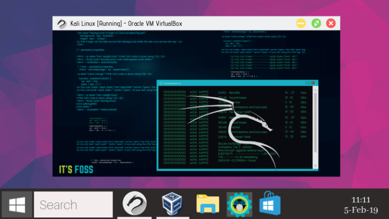
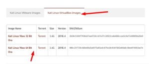
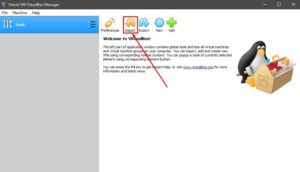
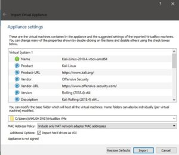
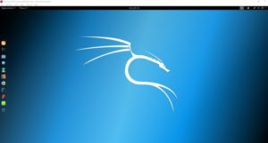

Установка Kali Linux на VirtualBox: самый быстрый и безопасный способ
Опубликовано : 15.02.2019 By cryptoparty

Из этого туториала вы узнаете, как максимально быстро установить Kali Linux на Virtual Box в Windows и Linux.
Kali Linux – один из лучших дистрибутивов Linux для любителей взлома и безопасности.
Поскольку он имеет дело с такой деликатной темой, как хакерство, он похож на обоюдоострый меч.
Мы обсуждали это в детальном обзоре Kali Linux в прошлом, поэтому я не буду утомлять вас такими же вещами снова.
Хотя вы можете установить Kali Linux, заменив существующую операционную систему, использование ее через виртуальную машину было бы лучшим и более безопасным вариантом.
С Virtual Box вы можете использовать Kali Linux как обычное приложение в вашей системе Windows / Linux. Это почти то же самое, что запуск VLC или игры в вашей системе.
Использование Kali Linux на виртуальной машине также безопасно.
Все, что вы делаете в Kali Linux, НЕ повлияет на вашу «хост-систему» (т.е. на вашу оригинальную операционную систему Windows или Linux).
Ваша фактическая операционная система останется нетронутой, а ваши данные в хост-системе будут в безопасности.
Как установить Kali Linux на VirtualBox
Я буду использовать VirtualBox.
Это замечательное решение для виртуализации с открытым исходным кодом, предназначенное практически для всех (для профессионального или личного использования).
Оно доступно бесплатно.
В этом руководстве мы поговорим, в частности, о Kali Linux, но вы можете установить практически любую другую ОС, чей ISO-файл существует или имеется предварительно созданный файл сохранения виртуальной машины.
Примечание. Те же шаги применимы к Windows / Linux, на котором работает VirtualBox.
Как я уже упоминал, вы можете установить Windows или Linux в качестве хоста.
Но в этом случае у меня установлена Windows 10 (не ненавидьте меня!), где я пытаюсь шаг за шагом установить Kali Linux в VirtualBox.
И, что самое приятное, – даже если вы используете дистрибутив Linux в качестве основной ОС, те же шаги будут применимы!
Хотите знать, как? Давайте посмотрим
Пошаговое руководство по установке Kali Linux на VirtualBox
Мы собираемся использовать специальный образ Kali Linux, созданный специально для VirtualBox.
Вы также можете скачать файл ISO для Kali Linux и создать новую виртуальную машину – но зачем это делать, когда у вас есть простая альтернатива?
1. Скачайте и установите VirtualBox
Первое, что вам нужно сделать, это загрузить и установить VirtualBox с официального сайта Oracle.
Как только вы загрузите установщик, просто дважды щелкните по нему, чтобы установить VirtualBox.
То же самое можно сказать и об установке VirtualBox в Ubuntu / Fedora Linux.
2. Загрузите готовый виртуальный образ Kali Linux.
После успешной установки перейдите на страницу загрузки Offensive Security, чтобы загрузить образ виртуальной машины для VirtualBox.
Если вы передумаете использовать VMware, это тоже возможно.

Как вы видите, размер файла превышает 3 ГБ, вы должны либо использовать параметр торрента, либо загрузить его с помощью диспетчера загрузки.
3. Установите Kali Linux на VirtualBox
После того, как вы установили VirtualBox и загрузили образ Kali Linux, вам просто нужно импортировать его в VirtualBox, чтобы он работал.
Вот как можно импортировать образ VirtualBox для Kali Linux:
Шаг 1: Запустите VirtualBox. Вы увидите кнопку импорта – нажмите на нее

Шаг 2: Затем просмотрите файл, который вы только что загрузили, и выберите его для импорта (как вы можете видеть на изображении ниже).
Имя файла должно начинаться с «kali linux» и заканчиваться расширением .ova.
После того, как выбрали, нажмите «Далее».
Шаг 3: Теперь вам будут показаны настройки виртуальной машины, которую вы собираетесь импортировать.
Таким образом, вы можете настроить их или нет – это ваш выбор. Это нормально, если вы идете с настройками по умолчанию.
Вам нужно выбрать путь, где у вас достаточно свободного места.
Я бы никогда не порекомендовал бы диск C: на Windows.

Здесь жесткие диски в качестве VDI означают виртуальное хранилище жестких дисков путем выделения набора дискового пространства.
После того, как вы закончите с настройками, нажмите Импорт и подождите некоторое время.
Шаг 4: Теперь вы увидите ее в списке.
Итак, просто нажмите Start, чтобы запустить Виртуалку.
Сначала вы можете получить сообщение об ошибке для поддержки контроллера USB-порта 2.0, вы можете отключить ее, чтобы устранить ее, или просто следуйте инструкциям на экране по установке дополнительного пакета, чтобы исправить это.

Я надеюсь, что это руководство поможет вам легко установить Kali Linux на Virtual Box.
Конечно, в Kali Linux есть много полезных инструментов для тестирования на проникновение – удачи в этом!
Совет: Kali Linux и Ubuntu основаны на Debian. Если у вас возникнут какие-либо проблемы или ошибки в Kali Linux, вы можете следовать в Интернете учебникам, предназначенным для Ubuntu или Debian.